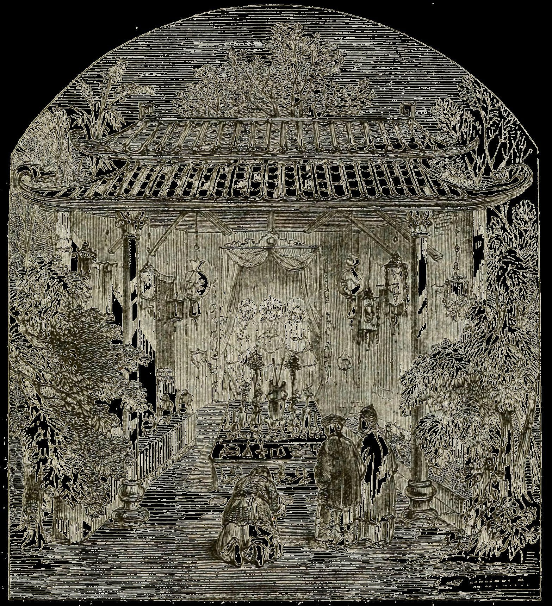
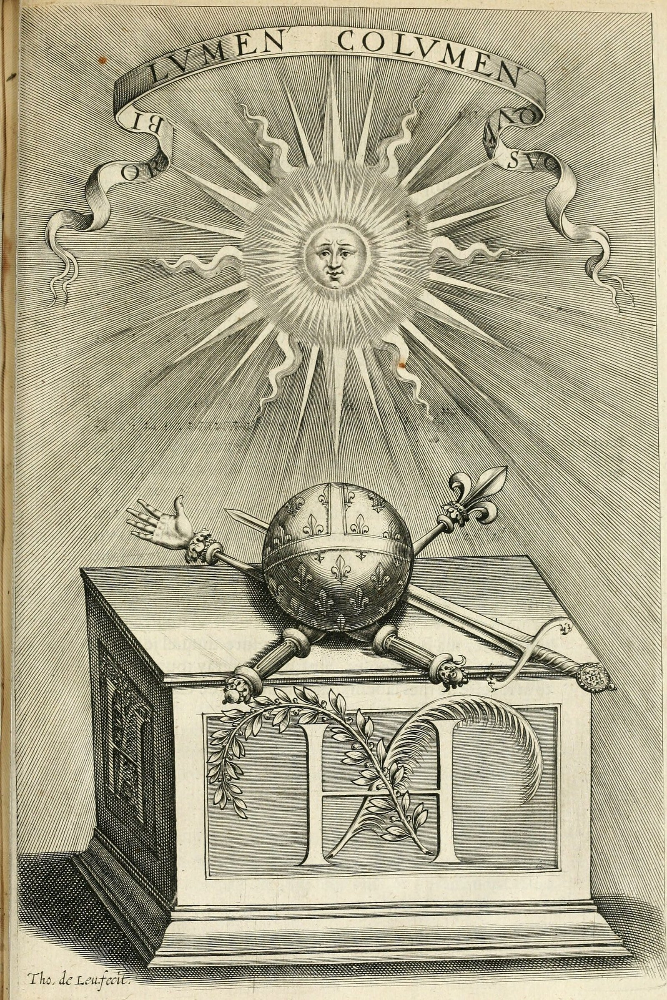
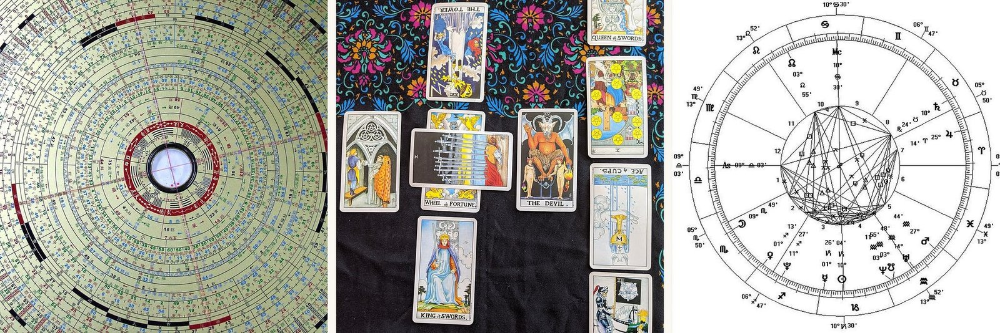

Where My Thesis Starts
First post. Two black boxes, and why I went looking for one of them.

I’m going to use this space to keep a record of my thesis while I’m making it — what I’m thinking, what changes, what turns out to be wrong. I’d rather post as I go than show up at the end with something finished and pretend it arrived that way. Expect updates as the work moves.
Here’s where it starts.
I wanted a thesis topic that had something to do with where I come from.
That sounds like a small reason. It was the real one. I spent months circling subjects I could defend, and none of them were mine. Then I went back to something I grew up around: jiaobei.
Jiaobei is how you ask a Taoist god a question in Taiwan. You hold two wooden blocks — flat on one side, curved on the other. You say who you are. You say what you want to know. Then you drop them on the floor.
One flat and one curved is yes. Both curved is no. Both flat means the god is laughing at you. You need three yes in a row before it counts. Then you draw a numbered stick, find the drawer with that number, and take out a poem. Nobody explains the poem to you.
I am not a believer. I’ve done it anyway.
What I keep noticing is how much this resembles asking an AI something.
Not the theatre of it. The structure. Both have a mechanism underneath — jiaobei has the blocks, the sticks, the poem, the interpreter; an AI has the model, the training data, the algorithm. And in both cases almost nobody using it can tell you how it actually arrives at what it hands back.
They are both black boxes. What interests me is that this doesn’t stop anyone. People ask anyway, and then they go do what it said.
There’s one more thing I can’t stop thinking about.
When the blocks come up no, people don’t stop. They ask again, phrased differently. The standard reading isn’t the god refused you — it’s that wasn’t a real question yet; be more specific. The system is telling you to rewrite your prompt.
I do this with AI several times a day. I did not expect to find it in a temple.
So here is what I’m chasing, as best I can say it now:
How does a person take an output from a system they don’t understand, and turn it into a decision they’re willing to act on?
I don’t think people go to an oracle for information. I don’t think they go to a chatbot for information either. They go for permission — for something outside themselves to carry the weight of deciding.

Which makes me wonder whether not being able to see inside is a flaw at all. It may be part of why it works.
I’m early. Next I’m talking to people who think about AI rather than build it, finding people who actually use it to decide things, and mapping what already exists that puts AI and divination together, East and West.

I don’t know what this becomes — a paper, an installation, something else. I’d rather let the question decide that than pick now and spend a year justifying the pick.
If you’ve ever asked a machine something, didn’t like the answer, and asked again until it agreed — I’d like to hear about it.